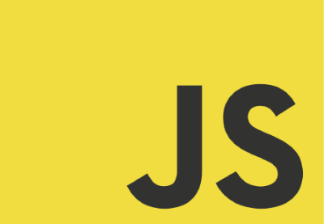
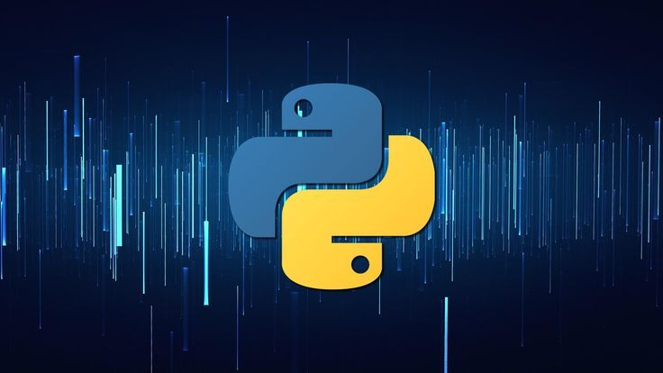
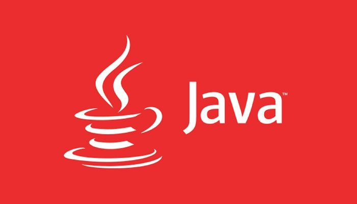

Fala Dev's aqui estão três formas de se preparar para entrar no mercado de trabalho como desenvolvedor de software
1º Busque qualificação:
O primeiro passo para se preparar para o mercado de trabalho como desenvolvedor de software é buscar
qualificação. Invista em cursos de programação, graduação ou pós-graduação na área de tecnologia da informação, e certificações
em linguagens e tecnologias específicas. Isso ajudará a aprimorar suas habilidades e conhecimentos técnicos, tornando-se um profissional
mais qualificado e competitivo no mercado.
2º Construa projetos pessoais:
Construir projetos pessoais é uma excelente maneira de aplicar o que você aprendeu e construir um portfólio
de trabalhos realizados. Crie seus próprios projetos, tente resolver problemas reais do cotidiano e crie soluções para ajudar pessoas
ou empresas. Isso demonstrará seu potencial e paixão pela programação, tornando-se um diferencial em sua candidatura.
3º Participe de eventos e comunidades:
Participar de eventos e comunidades de tecnologia é uma excelente maneira de se conectar com
outros profissionais e se manter atualizado sobre as tendências do mercado. Participe de eventos presenciais ou online,
como meetups, workshops, conferências e fóruns de discussão. Além disso, junte-se a grupos e comunidades online relacionadas a
programação e tecnologia da informação, onde você pode compartilhar seu conhecimento, fazer perguntas e receber feedback.
Essas são apenas algumas maneiras de se preparar para entrar no mercado de trabalho como desenvolvedor de software em 2023.
Lembre-se de que o mercado de trabalho em tecnologia da informação está em constante evolução e você deve estar sempre disposto a
aprender e se atualizar.
Linguagens de programação mais populares em 2021, que podem continuar sendo usadas em 2022.
De acordo com pesquisas recentes, as três linguagens de programação mais usadas em 2021 foram:
1º JavaScript -
Uma linguagem de programação usada principalmente para desenvolvimento web e aplicativos móveis.
JavaScript permite a criação de páginas web interativas e responsivas, e é uma das principais linguagens de programação
para o desenvolvimento de aplicações de front-end e back-end.

2º Python -
Uma linguagem de programação de alto nível, usada em uma ampla gama de aplicativos,
desde desenvolvimento web até inteligência artificial. É uma linguagem de programação popular para iniciantes,
devido à sua sintaxe simples e fácil de aprender, e é amplamente utilizada em ciência de dados e análise de dados.

3º Java -
Uma linguagem de programação orientada a objetos, usada principalmente para o desenvolvimento de aplicativos
empresariais e de desktop. É uma das linguagens de programação mais antigas e amplamente usadas, com muitos frameworks
e bibliotecas disponíveis para desenvolvimento de aplicativos. É frequentemente usada em grandes empresas e corporações.

Com tantas opções disponíveis, pode ser difícil decidir por onde começar. Neste artigo, discutiremos algumas das linguagens de programação
mais populares e ajudaremos você a escolher a que melhor atende às suas necessidades.
É importante lembrar que a escolha da linguagem de programação depende muito do que você deseja fazer com ela.
Existem linguagens de programação para a web, para aplicativos móveis, para jogos e assim por diante.
Cada uma dessas áreas tem suas próprias linguagens de programação preferenciais. Então, primeiro,
vamos dar uma olhada nas opções mais populares e suas respectivas áreas de aplicação.
Python
Python é uma linguagem de programação versátil que é usada em muitos campos, como análise de dados,
inteligência artificial e aprendizado de máquina. É conhecida por sua sintaxe clara e fácil de ler,
o que a torna uma excelente escolha para iniciantes. Além disso, Python tem uma grande comunidade e muitos recursos
de aprendizado disponíveis on-line.
JavaScript
JavaScript é uma das linguagens de programação mais populares para o desenvolvimento web.
É a linguagem principal para a criação de páginas web interativas, incluindo animações e interações com o usuário.
Além disso, JavaScript é amplamente usado para desenvolvimento de aplicativos front-end e back-end.
Java
Java é uma linguagem de programação amplamente usada para desenvolvimento de aplicativos desktop e móveis,
bem como para desenvolvimento de jogos. É conhecida por sua portabilidade e segurança, tornando-se uma das
linguagens mais usadas em empresas e organizações.
C++
C++ é uma linguagem de programação de alto desempenho usada para desenvolvimento de sistemas operacionais,
jogos e aplicativos de desktop. É uma linguagem complexa e poderosa, mas pode ser desafiadora para iniciantes.
Ruby
Ruby é uma linguagem de programação usada principalmente para desenvolvimento web e aplicativos de servidor.
É conhecida por sua sintaxe fácil de ler e escrever, bem como por sua comunidade forte e solidária.
PHP
PHP é uma linguagem de programação usada principalmente para desenvolvimento de páginas web dinâmicas e aplicativos web.
É fácil de aprender e é a linguagem mais usada para sites da web.
Com base nas informações acima, se você estiver interessado em desenvolvimento web,
JavaScript ou PHP pode ser a melhor escolha para você. Se você estiver interessado em aprendizado de máquina,
análise de dados ou inteligência artificial, Python pode ser a melhor opção. Se você estiver interessado
em desenvolvimento de jogos ou sistemas operacionais, C++ pode ser a escolha ideal. Se você estiver interessado
em desenvolvimento de aplicativos móveis, Java pode ser a melhor escolha.
No final, a escolha da linguagem de programação depende do que você deseja fazer com ela.
Não há uma resposta única para todos. A melhor opção é escolher uma linguagem que se adapte
às suas necessidades e interesses. Depois de aprender uma linguagem, você pode facilmente aprender outras,
pois a maioria das linguagens de programação compartilha princípios e conceitos.